SmolyakQR¶
About the SmolyakQR class¶
The WaveBlocks Project
@author: R. Bourquin @copyright: Copyright (C) 2010, 2011, 2012, 2013, 2014 R. Bourquin @license: Modified BSD License
Inheritance diagram¶
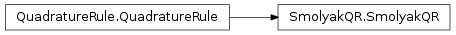
Class documentation¶
- class WaveBlocksND.SmolyakQR(dimension, level, rules, options={})¶
This class implements the construction of high dimensional quadrature rules from one-dimensional ones by applying the Smolyak construction.
- __init__(dimension, level, rules, options={})¶
Initialize a SmolyakQR instance.
Parameters: - dimension – The dimension
 of the final
quadrature rule.
of the final
quadrature rule. - level – The level
 of the Smolyak construction.
From theory we know that a Smolyak rule of order
is exact up to 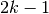 if the
individual rules 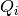 are exact up to
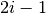. The level has to be larger than
or equal 1.
of the Smolyak construction.
From theory we know that a Smolyak rule of order
is exact up to 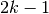 if the
individual rules 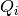 are exact up to
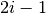. The level has to be larger than
or equal 1. - rules – A collection of QuadratureRule subclass instances. Their nodes and weights will be used in the Smolyak construction.
Note
The rules object must implement simple indexing by non-negative numbers and for a given index
 return
a univariate quadrature rule of order . Special attention
must be payed in case this object is mutable. We do not copy it.
return
a univariate quadrature rule of order . Special attention
must be payed in case this object is mutable. We do not copy it.Warning
This implementation uses a special optimization that speeds up the computation of all quadrature nodes, especially in high dimension, but is only valid if all one dimensional rules have symmetric nodes and weights. That is, for every node weight pair 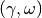 that is part of the rule, the pair 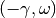 is also contained in the quadrature rule.
- dimension – The dimension
- construct_rule(K, tolerance=1e-15)¶
Compute the quadrature nodes 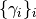 and quadrature weights 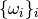.
Parameters: - K – The level 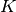 of the Smolyak construction.
- tolerance – Tolerance for dropping identical quadrature nodes.
Note
This is an internal method and there should be no reason to explicitely call it manually.
Warning
This method is very expensive and may take a long time to finish. Also, the quadrature nodes may use large amounts of memory depending on the dimension and level parameters.
- get_description()¶
Return a description of this quadrature rule object. A description is a dict containing all key-value pairs necessary to reconstruct the current instance. A description never contains any data.
- get_dimension()¶
Returns: The space dimension of the quadrature rule.
- get_nodes(flat=True, split=False)¶
Returns the quadrature nodes .
Parameters: - flat (Boolean, default is True.) – Dummy parameter for API compatibility with Grids.
- split (Boolean, default is False.) – Dummy parameter for API compatibility with Grids.
Returns: An ndarray containing the quadrature nodes .
- get_number_nodes()¶
Returns: The number of quadrature nodes denoted by 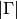 that are part of this quadrature rule 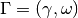.
- get_weights()¶
Returns the quadrature weights .
Returns: An ndarray containing the quadrature weights .